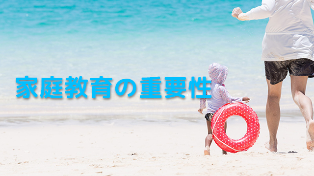

これからの時代、子どもに対する家庭での教育が以前に増して重要になってくるだろう。それは旧世代の人たちが騒ぎ立てる「子どもの躾─しつけ─」レベルではなく、知育のレベルの話だ。
知育といっても学校のテストや入試などの目先の点数のことではない。もっと本質的で先を見据えた汎用性のある知的能力のことである。これらの能力は実は家庭環境に大きく左右される。
ところで本質的で先を見据えた汎用性のある能力とは何だろう？
まず知的好奇心が豊かなこと。これが第一条件となる。その上で興味関心のあることを深く探求する粘り強さ。そこで得た知識を実生活に応用する力。さらに将来に渡って学び続ける意欲。これにプラスしてコミュニケーション能力である。
これらの能力は社会の変化と共に今後ますます必要とされる力でありながら、既存の学校教育のシステムからはどれも対象外になってきた。要するに学校はこの種の能力育成という点ではアテにならないのだ。
だから家族でやるしかない。
「家庭教育が重要だ」などと言うと多くの親は構えてしまうかもしれない。何か難しいことを子どもに教えなければならないのかと心配するかもしれない。そうではない。余計なことをしなければ良いのだ。
私の見るところいまの親たちは、子どもが幼いころから習いごとに通わせたり幼児教育を施したりとやたらに詰め込み過ぎている。
そんなことより大切なのは、ごく自然な親子の触れ合い─何気ない親子の会話やふと漏らす親のひと言─のほうであり、その中で親の人生観をそれとなく伝えたり日常の出来事に不思議（神秘）を一緒に感じる姿勢である。
何も難しいことではない。私の言っていることはきわめて素朴な親子の触れ合いである。
たとえばたまたまテレビで見ていたニュースなどでも、「どうしてこんなことが起こるのだろう」と家族で話すこともあるだろう。その際、単に「悲惨だ」とか「嫌だねぇ」で終わるのではなく、なるべくその背景にも触れることで子どもの知的好奇心は刺激を受ける。
子どもに言って聞かせる必要はない。特定の方向に誘導しようとするのもNG。ここで有効なのは案外夫婦の会話だったりする。夫婦が何かのテーマ、たとえば環境問題について何気なく感想なり意見を述べるとき子どもは結構そのやり取りを聴いているものだ。
その記憶は後々まで残る。やがて子どもも環境問題に自然と関心を持つだろう。
この「自然に」というのが大事であって、親が意図的に子どもに関心を持たそうとしないほうが良い。意図的に教育しようとしないからこそ本当の興味、関心が内側に育つからだ。
小さい頃から「英会話」だとか「算数」「読み書き」の教室へ入れることは、良い成績を取らせよう将来的に有利な立場に就かせようと子どもを意図的に教育している、つまり外側から特定方向へ誘導しているという点で本当の興味関心を育てることにはならない。
私はすべての習いごとを否定しているわけではない。スポーツや音楽、絵画などの芸術系はむしろ早くから習わせたほうが良いと思っている。
しかし勉強系は早くから「やらされる」ことで嫌いになったり、将来もっとも必要なときに肝心の能力を発揮できなくなりがちだ。
長く教育に携わっていてそんな例をたくさん見てきた。
親が目先の点数にばかりこだわり子どもに勉強を強制する。そのことがかえって子どもの才能の芽を摘んでしまっていることに親はもっと気づくべきだ。テストの点や通知表、入試の合否など数値的な結果、表面的な成否ばかりを重視することが、本来子どもが持つ学ぶことへの内発的欲求を押し殺し将来─大学での学問探求や社会人になってからの向上意欲─までも奪っているとしたら平気でいられるだろうか。
親は、本当に子どもの将来を考えるなら目先の点数（利益）ばかり追わずもっと長期的な展望で子どもを見て欲しい。幼児期から「勉強系」の幼稚園や塾に通わせるのではなく親にできる「手作りの学びの場」を子に与えて欲しい。
教育を安易に他人頼みにするのではなく親にしかできない「学ぶ喜び」を与えて欲しい。それには親子の触れ合いをもっと大切にし、子どもの知的好奇心─子どもなら誰でも持っている才能─を伸ばす環境づくりを心がけること。
その土台さえ形づくられていれば「学力」は後でいくらでも伸ばすことができる。40年以上も教育の現場にいて最終的に伸びる子は、家庭で既に知的好奇心（関心）の土台がしっかり築かれていた者に限ることを実感しているからだ。
このテーマについては今後も続けていきたいと思う。
【お願い】
ホームページリニューアルのため当ブログは来年2月いっぱいまで休載します。
リニューアル後にまた再開する予定ですのでご了解のほどをお願いいたします。